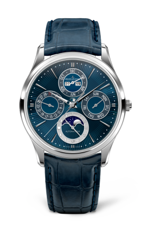
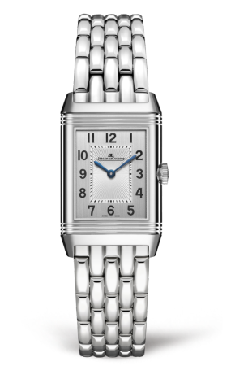
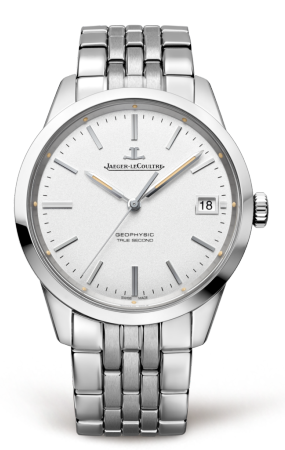

New 2019 SIHH Series

Our
Watches
Watches
2019 SIHH에서 새롭게 선보인 예거 르쿨트르 신제품들을 만나보세요.
01
예거르쿨트르 부티크
02
카달로그 신청하기
마스터 울트라 씬 퍼페추얼 에나멜
예거 르쿨트르의 특별한 기술과 독창적인 스타일이 돋보이는 이번 리미티드 에디션은 오직 100피스 한정 제작됩니다.
01
리베르소
리버스 케이스의 전설적인 탄생 비화를 들어보셨나요?
이 시계는 1930년대 초반 인도에서 주둔하고 있던 영국인 장교들이 즐기던 폴로 경기에 적합하도록 특별히 설계된 모델로 탄생했습니다. 케이스를 뒤집으면 다이얼은 모습을 감추며 뒷면이 드러납니다. 이때 페이스는 폴로 스틱의 마찰로 인해 발생할 수 있는 상처로부터 완벽하게 보호받게 됩니다.
클래식한 페이스가 상징적인 3개의 가드룬에 둘러싸인 리베르소는 그 탄생 이후부터 진정한 아름다움을 식별할 줄 아는 남성과 여성 모두에게 찬사를 받아왔습니다. 이 케이스는 보석 장식을 통해 여성미를 발산하거나 다양한 기능의 남성미를 강렬하게 풍기며 중성적인 매력을 자랑하며 아르 데코의 미학을 강조합니다.
REVERSO
 리베르소 클래식 스몰 더 많은 착용 사진
더 많은 착용 사진
리베르소 화보 더보기
02
랑데부
우리가 흔히 알고 있는 것과 달리 손목시계를 처음 착용한 사람들은 바로 여성이었습니다. 항상 선구적인 실험정신을 보여준 예거 르쿨트르는 특별하게 작은 칼리버와 다이아몬드로 풀 세팅된 우아함이 돋보이는 시계를 처음 선보인 사람 중 하나였습니다. 랑데부 컬렉션은 이러한 전통에 대한 경의를 표하고 현대 여성들의 품격을 높이고자 합니다.
랑데부 시계는 한번에 그 비밀을 다 드러내지 않습니다. 사파이어 하단에서 드러나는 기계적인 복잡성이 존재하는 오토매틱 무브먼트, 피니시의 섬세함, 정교하게 새긴 인그레이빙 혹은 천연진주로 장식한 페이스, 보석이 발산하는 광채...어떤 각도에서나 우아함이 느껴지는 이 컬렉션은 미학과 기계적인 요소들이 조화를 이루고 있습니다.
RENDEZ-VOUS
 랑데부 데이트 스몰 쿼츠
랑데부 데이트 스몰 쿼츠
랑데부 화보 더보기
03
마스터
예거 르쿨트르가 탄생시킨 마스터 컬렉션은 필수 요소에 집중하기 위해 액세서리 그 자체로부터 자유를 추구합니다. 존재하는 그 자체의 방식을 그대로 보여줍니다.
위대한 품격. 자체의 세련된 디자인으로 바로 알아볼 수 있는 마스터 컬렉션은 3가지 레인지인 마스터 그랑 트래디션, 마스터 울트라 씬 및 마스터 컨트롤로 만나볼 수 있습니다.
각각의 시계에는 고유 기능과 컴플리케이션이 있지만, 공통적으로 라운드 형태와 디테일의 섬세함을 자랑합니다. 순수성 그 자체를 표현합니다.
MASTER
마스터 컨트롤 데이트 더 많은 착용 사진
더 많은 착용 사진
마스터 화보
04
예거 르쿨트르 폴라리스
이 컬렉션의 특징과 정신은 그랑 메종을 대표하는 1968년 메모복스 폴라리스에서 영감을 받았습니다.
어떠한 환경 속에서도 도시 모험가의 동반자가 되어주는 예거 르쿨트르 폴라리스 컬렉션은 그랑 메종 특유의 품격이 담긴 스포티한 개성을 표출합니다. 컬렉션의 타임피스는 날짜, 알람, 크로노그래프, 세계 시간 등 현대 남성과 여행에 유용한 기능을 갖추고 있습니다.
JAEGER-LECOULTRE POLARIS
예거 르쿨트르 폴라리스 메모복스
더 많은 착용 사진
05
지오피직
지오피직 시계들의 이름이 예거 르쿨트르 유산뿐만 아닌 역사의 일부인 모델로부터 유래했다는 것을 알고 계신가요?
이 전설적인 크로노미터는 1958년 탐험과 과학적 발견으로 가득한 국제지구물리학의 해에 그 일환으로 탄생했습니다. 단순한 외관에 고급 시계의 캘리버가 가진 복잡한 세상을 숨긴 이 컬렉션의 시계들은 많은 것을 의미합니다. 이 시계들의 거의 대부분은 진정 섬세한 조립의 결과로 트루 세컨드를 품고 있습니다. 이 장치에서 세컨드 핸드는 점프하듯 움직입니다. 평범한 기계식 무브먼트와 달리 다소 독특하지만 시계의 기능에 영향을 전혀 주지 않으며 작동합니다.
이 시계들은 또한 공기 마찰을 줄이는 비회전 방식의 고유 밸런스 휠인 자이로랩을 갖추고 있습니다.
GEOPHYSIC
 지오피직 트루 세컨드
더 많은 착용 사진
지오피직 화보
06
듀오미터
시계 제조의 경계를 넘나들고자 하는 강력한 의지에서 탄생된 듀얼 윙 컨셉은 두 가지 측면에서 시계 제조 기술에 혁신을 가져왔습니다.
독립적으로 작동하는 두 개의 메커니즘이 하나의 레귤레이터에 연결되어 있는 듀오미터 시계는 뛰어난 기능과 정밀함으로 시선을 사로잡습니다. 첫 번째 메커니즘은 컴플리케이션의 정확한 작동을, 두 번째 메커니즘은 시간의 흐름을 정확하게 측정하도록 합니다.
높은 정확도를 구현하는 다수의 기술들은 시계의 무브먼트를 수공으로 장식하는데 사용됩니다. 그 예로 “꼬뜨 쏠리이(côtes soleillées)”는 금속 부분에 태양의 층을 표현하여 깊은 인상을 선사하는 특허 기술입니다.
JAEGER-LECOULTRE POLARIS
 듀오미터 퀀템 루너
듀오미터 퀀템 루너
더 많은 착용 사진
07
애트모스
어떤 영감이 예거 르쿨트르 시계 제조자들이 1928년에 애트모스 클락의 꿈을 꾸도록 이끌었을까요? 어떻게 그들은 온도의 변화를 통해 동력을 만드는 방식을 생각해냈을까요?
애트모스 클락은 그 창의성으로 오늘날에도 사람들을 여전히 놀라게 합니다. 밀봉된 캡슐 내에서 혼합된 가스들은 각 온도의 변화에 따라 확장되고 수축됩니다. 이런 원리로 인간의 어떤 개입도 없이 메커니즘은 자연스럽게 작동합니다.
아르 데코부터 컨템포러리 아트까지, 애트모스는 흔치 않은 장인정신과 시계 제조의 복잡성으로 늘 시대에 부합해왔습니다. 또한 예거 르쿨트르와 함께 작업하는 위대한 디자이너의 재해석 덕분에 고유의 정신을 지켜올 수 있었습니다.
ATMOS
애트모스 클래식
애트모스 화보
08
히브리스 메카니카
예거 르쿨트르가 탄생시킨 마스터 컬렉션은 필수 요소에 집중하기 위해 액세서리 그 자체로부터 자유를 추구합니다. 존재하는 그 자체의 방식을 그대로 보여줍니다.
위대한 품격. 자체의 세련된 디자인으로 바로 알아볼 수 있는 마스터 컬렉션은 3가지 레인지인 마스터 그랑 트래디션, 마스터 울트라 씬 및 마스터 컨트롤로 만나볼 수 있습니다.
각각의 시계에는 고유 기능과 컴플리케이션이 있지만, 공통적으로 라운드 형태와 디테일의 섬세함을 자랑합니다. 순수성 그 자체를 표현합니다.
HYBRIS MECHANICA
리베르소 자이로투르비옹 2
더 많은 착용 사진